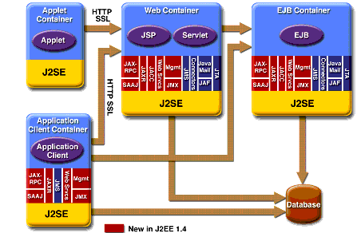

J2EE 1.4 APIs
Figure 1-7 illustrates the availability of the J2EE 1.4 platform APIs in each J2EE container type. The following sections give a brief summary of the technologies required by the J2EE platform and the J2SE enterprise APIs that would be used in J2EE applications.

Enterprise JavaBeans Technology
An Enterprise JavaBeans
(EJB
As mentioned earlier, there are three kinds of enterprise beans: session beans, entity beans, and message-driven beans. Enterprise beans often interact with databases. One of the benefits of entity beans is that you do not have to write any SQL code or use the JDBC
Java Servlet Technology
Java servlet technology lets you define HTTP-specific servlet classes. A servlet class extends the capabilities of servers that host applications that are accessed by way of a request-response programming model. Although servlets can respond to any type of request, they are commonly used to extend the applications hosted by web servers.
JavaServer Pages Technology
JavaServer Pages
Java Message Service API
The Java Message Service (JMS) API is a messaging standard that allows J2EE application components to create, send, receive, and read messages. It enables distributed communication that is loosely coupled, reliable, and asynchronous.
Java Transaction API
The Java Transaction API (JTA) provides a standard interface for demarcating transactions. The J2EE architecture provides a default auto commit to handle transaction commits and rollbacks. An auto commit means that any other applications that are viewing data will see the updated data after each database read or write operation. However, if your application performs two separate database access operations that depend on each other, you will want to use the JTA API to demarcate where the entire transaction, including both operations, begins, rolls back, and commits.
JavaMail API
J2EE applications use the JavaMail
JavaBeans Activation Framework
The JavaBeans Activation Framework (JAF) is included because JavaMail uses it. JAF provides standard services to determine the type of an arbitrary piece of data, encapsulate access to it, discover the operations available on it, and create the appropriate JavaBeans component to perform those operations.
Java API for XML Processing
The Java API for XML Processing (JAXP) supports the processing of XML documents using Document Object Model (DOM), Simple API for XML (SAX), and Extensible Stylesheet Language Transformations (XSLT). JAXP enables applications to parse and transform XML documents independent of a particular XML processing implementation.
JAXP also provides namespace support, which lets you work with schemas that might otherwise have naming conflicts. Designed to be flexible, JAXP lets you use any XML-compliant parser or XSL processor from within your application and supports the W3C schema. You can find information on the W3C schema at this URL:
http://www.w3.org/XML/Schema.Java API for XML-Based RPC
The Java API for XML-based RPC (JAX-RPC) uses the SOAP standard and HTTP, so client programs can make XML-based remote procedure calls (RPCs) over the Internet. JAX-RPC also supports WSDL, so you can import and export WSDL documents. With JAX-RPC and a WSDL, you can easily interoperate with clients and services running on Java-based or non-Java-based platforms such as .NET. For example, based on the WSDL document, a Visual Basic .NET client can be configured to use a web service implemented in Java technology, or a web service can be configured to recognize a Visual Basic .NET client.
JAX-RPC relies on the HTTP transport protocol. Taking that a step further, JAX-RPC lets you create service applications that combine HTTP with a Java technology version of the Secure Socket Layer (SSL) and Transport Layer Security (TLS) protocols to establish basic or mutual authentication. SSL and TLS ensure message integrity by providing data encryption with client and server authentication capabilities.
Authentication is a measured way to verify whether a party is eligible and able to access certain information as a way to protect against the fraudulent use of a system or the fraudulent transmission of information. Information transported across the Internet is especially vulnerable to being intercepted and misused, so it's very important to configure a JAX-RPC web service to protect data in transit.
SOAP with Attachments API for Java
The SOAP with Attachments API for Java (SAAJ) is a low-level API on which JAX-RPC depends. SAAJ enables the production and consumption of messages that conform to the SOAP 1.1 specification and SOAP with Attachments note. Most developers do not use the SAAJ API, instead using the higher-level JAX-RPC API.
Java API for XML Registries
The Java API for XML Registries (JAXR) lets you access business and general-purpose registries over the web. JAXR supports the ebXML Registry and Repository standards and the emerging UDDI specifications. By using JAXR, developers can learn a single API and gain access to both of these important registry technologies.
Additionally, businesses can submit material to be shared and search for material that others have submitted. Standards groups have developed schemas for particular kinds of XML documents; two businesses might, for example, agree to use the schema for their industry's standard purchase order form. Because the schema is stored in a standard business registry, both parties can use JAXR to access it.
J2EE Connector Architecture
The J2EE Connector architecture is used by J2EE tools vendors and system integrators to create resource adapters that support access to enterprise information systems that can be plugged in to any J2EE product. A resource adapter is a software component that allows J2EE application components to access and interact with the underlying resource manager of the EIS. Because a resource adapter is specific to its resource manager, typically there is a different resource adapter for each type of database or enterprise information system.
The J2EE Connector architecture also provides a performance-oriented, secure, scalable, and message-based transactional integration of J2EE-based web services with existing EISs that can be either synchronous or asynchronous. Existing applications and EISs integrated through the J2EE Connector architecture into the J2EE platform can be exposed as XML-based web services by using JAX-RPC and J2EE component models. Thus JAX-RPC and the J2EE Connector architecture are complementary technologies for enterprise application integration (EAI) and end-to-end business integration.
JDBC API
The JDBC API lets you invoke SQL commands from Java programming language methods. You use the JDBC API in an enterprise bean when you override the default container-managed persistence or have a session bean access the database. With container-managed persistence, database access operations are handled by the container, and your enterprise bean implementation contains no JDBC code or SQL commands. You can also use the JDBC API from a servlet or a JSP page to access the database directly without going through an enterprise bean.
The JDBC API has two parts: an application-level interface used by the application components to access a database, and a service provider interface to attach a JDBC driver to the J2EE platform.
Java Naming and Directory Interface
The Java Naming and Directory Interface
J2EE naming services provide application clients, enterprise beans, and web components with access to a JNDI naming environment. A naming environment allows a component to be customized without the need to access or change the component's source code. A container implements the component's environment and provides it to the component as a JNDI naming context.
A J2EE component locates its environment naming context using JNDI interfaces. A component creates a
javax.naming.InitialContextobject and looks up the environment naming context inInitialContextunder the namejava:comp/env. A component's naming environment is stored directly in the environment naming context or in any of its direct or indirect subcontexts.A J2EE component can access named system-provided and user-defined objects. The names of system-provided objects, such as JTA
UserTransactionobjects, are stored in the environment naming context,java:comp/env. The J2EE platform allows a component to name user-defined objects, such as enterprise beans, environment entries, JDBCDataSourceobjects, and message connections. An object should be named within a subcontext of the naming environment according to the type of the object. For example, enterprise beans are named within the subcontextjava:comp/env/ejb, and JDBCDataSourcereferences in the subcontextjava:comp/env/jdbc.Because JNDI is independent of any specific implementation, applications can use JNDI to access multiple naming and directory services, including existing naming and directory services such as LDAP, NDS, DNS, and NIS. This allows J2EE applications to coexist with legacy applications and systems. For more information on JNDI, see The JNDI Tutorial:
Java Authentication and Authorization Service
The Java Authentication and Authorization Service (JAAS) provides a way for a J2EE application to authenticate and authorize a specific user or group of users to run it.
JAAS is a Java programing language version of the standard Pluggable Authentication Module (PAM) framework, which extends the Java 2 Platform security architecture to support user-based authorization.
Simplified Systems Integration
The J2EE platform is a platform-independent, full systems integration solution that creates an open marketplace in which every vendor can sell to every customer. Such a marketplace encourages vendors to compete, not by trying to lock customers into their technologies but instead by trying to outdo each other in providing products and services that benefit customers, such as better performance, better tools, or better customer support.
The J2EE APIs enable systems and applications integration through the following:
- Unified application model across tiers with enterprise beans
- Simplified request-and-response mechanism with JSP pages and servlets
- Reliable security model with JAAS
- XML-based data interchange integration with JAXP, SAAJ, and JAX-RPC
- Simplified interoperability with the J2EE Connector architecture
- Easy database connectivity with the JDBC API
- Enterprise application integration with message-driven beans and JMS, JTA, and JNDI
You can learn more about using the J2EE platform to build integrated business systems by reading J2EE Technology in Practice, by Rick Cattell and Jim Inscore (Addison-Wesley, 2001):
All of the material in The J2EE(TM) 1.4 Tutorial is copyright-protected and may not be published in other works without express written permission from Sun Microsystems.